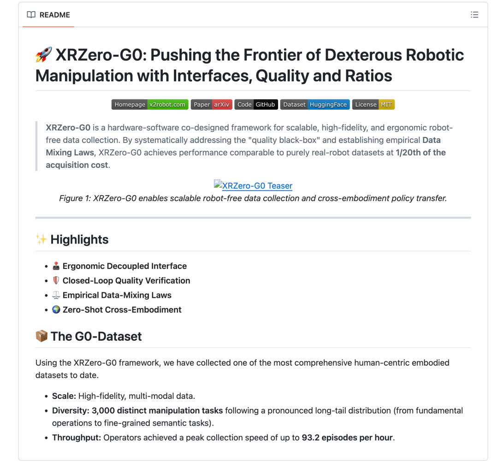
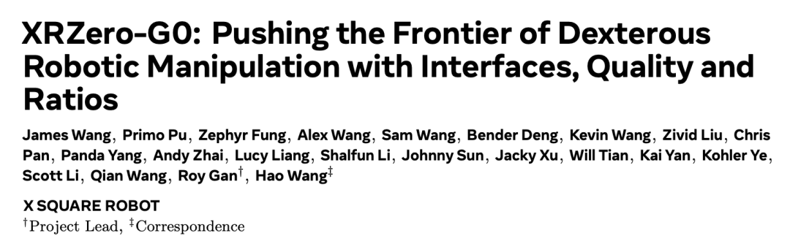
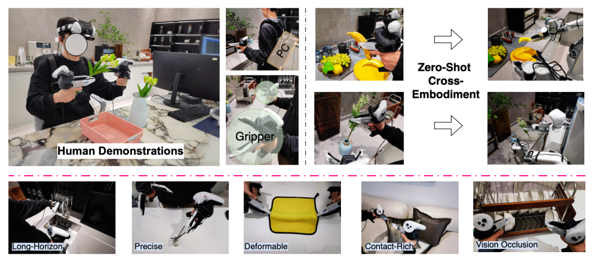
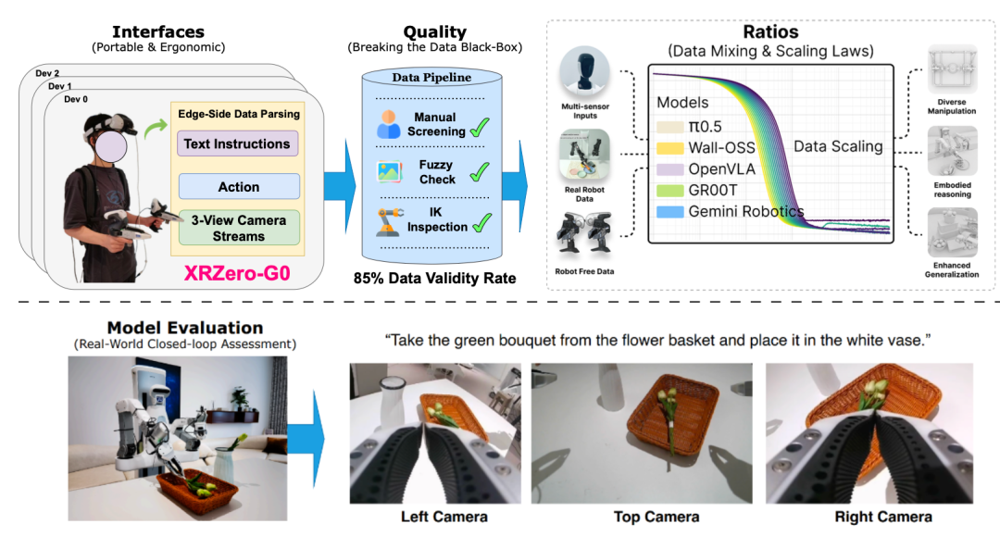
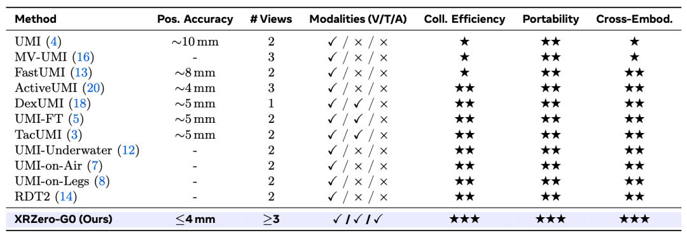
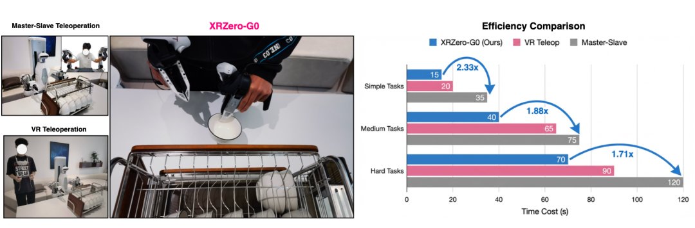
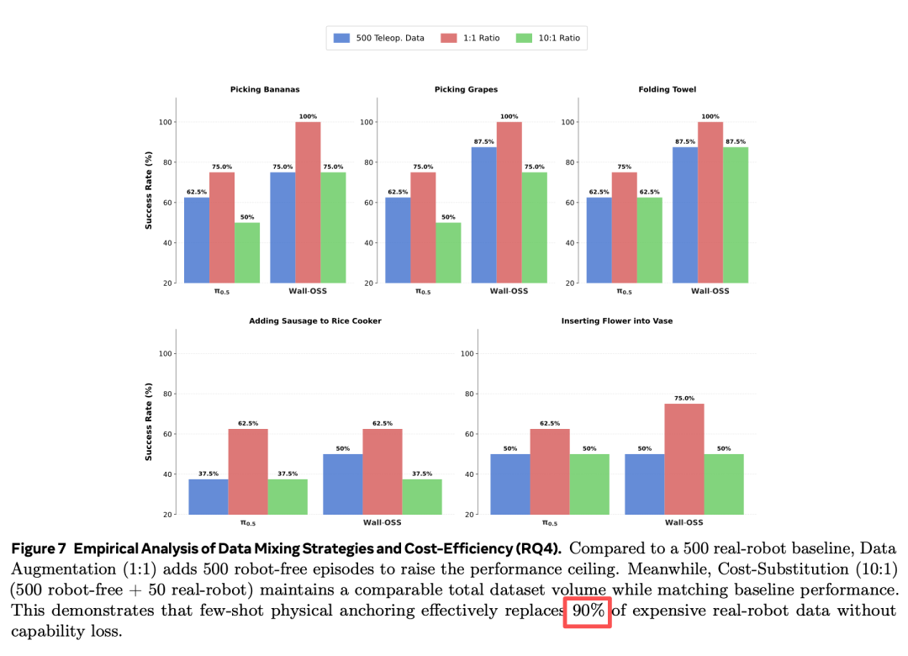
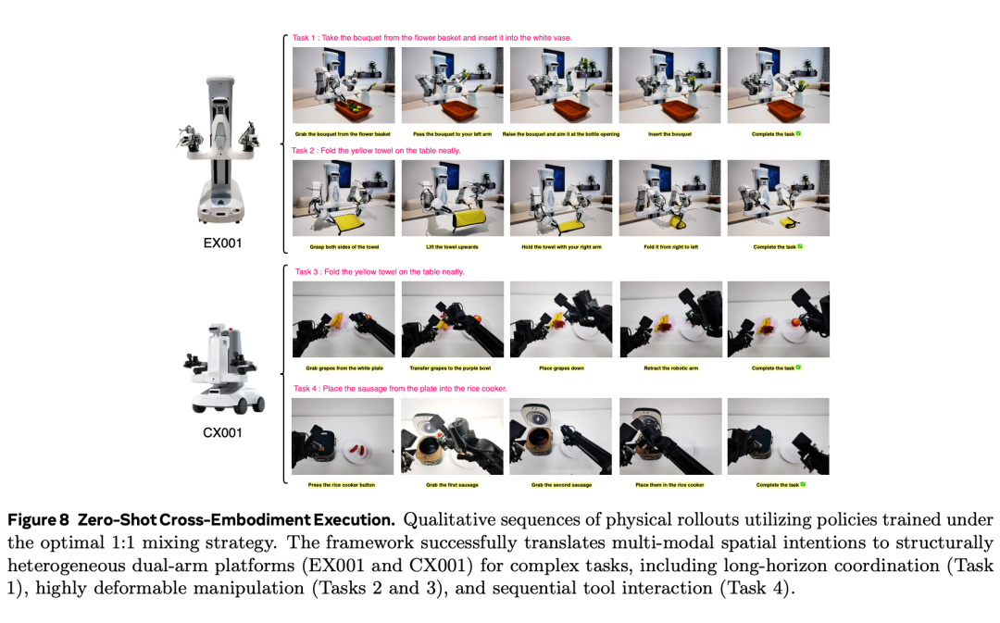

China's First: The Embodied Data Collection "Black Box" Has Been Open-Sourced — the Era of Costly Embodied Data Has Ended

X-Square Robot has open-sourced XRZero-G0, reducing data-acquisition costs to one-twentieth of prior levels.
The embodied-intelligence industry has recently been galvanized by an open-source project.
Word initially circulated only among a small group that "a complete embodied dataset had been open-sourced." A preliminary investigation, however, revealed that this was far more than a simple dataset: it is a comprehensive, robot-free data-acquisition system.
Put differently, typical open-source contributions amount to "a snippet of code," whereas this release encompasses an end-to-end pipeline — robot-free data acquisition, quality inspection, training, and real-robot evaluation — along with a multimodal, robot-free dataset exceeding 2,000 hours and covering 3,000 tasks, fully packaged and made public.


Paper link: https://arxiv.org/abs/2604.13001
This marks a first in China. A deeper dive into the corresponding paper was warranted.
In essence, the XRZero-G0 paper achieves two objectives. First, it pries open the "black box" of robotic data acquisition, providing a detailed methodology for collecting high-quality data at a fraction of the usual cost. Second, it delivers a practical playbook for training on that data.
Consider data acquisition. The prevailing wisdom holds that "embodied-industry data is both hard to come by and prohibitively expensive." Some observers have gone so far as to argue that embodied intelligence's slow progress can be blamed entirely on data-collection constraints.
Large language models consume text — a resource abundant across the internet. Robots, by contrast, require physical data, every unit of which must be acquired through tangible expenditure. Historically, the industry has grappled with three structural impediments: expense, quality, and non-reusability — an "impossible trilemma" at the embodied-data layer.

The XRZero-G0 paper proposes an elegant solution, reducible to a single proposition: a human operator wears the equipment and performs the task — no physical robot is required on site.
This approach has been tried before (e.g., the UMI paradigm), but it suffered from a critical defect: the data it produced was a "black box" — there was no way to ascertain whether a physical robot could reproduce the actions. XRZero-G0 transforms this black box into a transparent white box through a three-tier verification process.
First verification tier: three cameras.
Conventional handheld data-acquisition devices offered only single- or dual-camera views. The limitation is clear: when the operator's hands cross or an object is occluded by an arm, the data is rendered unusable. XRZero-G0's solution is direct: the operator wears a PICO VR headset, a global camera mounted overhead, and one camera on each wrist.

The three camera views, supplemented by six-degree-of-freedom pose data and backpack-based edge computing for spatiotemporal alignment, achieve a precision of ≤4 mm. Regardless of turning, bending, or walking, occlusion and drift are eliminated.

Second verification tier: a virtual joint limiter.
Human joints are highly flexible — capable of yoga — whereas robots are not. In prior teleoperation attempts, a motion beyond the robot's kinematic range caused a motor to burn out. XRZero-G0 competently incorporates automatic inverse kinematics (IK) verification to filter out actions exceeding joint limits.
Third verification tier: real-robot playback.
Following the first two tiers, the system randomly samples a portion of the data and feeds it directly to a real dual-arm robot for "open-loop playback." Data is only committed to storage if the robot successfully completes the task.
This three-tier filtering funnel pushes the effective data-acceptance rate above 85%, achieving usability comparable to real-robot data while accelerating collection speed.
Per the paper's data, simple tasks were compressed from 35 to 15 seconds — a 2.33× improvement; complex tasks achieved a 1.71× improvement. Peak acquisition velocity reached 93.2 trajectories per hour. The advantage over physical-robot collection is evident.

The above, however, addresses only "how to collect data more effectively." The more critical contribution of the XRZero-G0 paper lies in teaching the industry "how to train with it."
In embodied training, it is well understood that "low-cost robot-free data" must be blended with "expensive real-robot data." Determining the optimal ratio, however, was previously a matter of trial and error — an alchemical process.
The XRZero-G0 team undertook a notably rigorous approach: a systematic series of exhaustive experiments that ultimately yielded a "golden ratio."
Prior to this, three configurations were compared:
▪ 500 pure real-robot trajectories (baseline)
▪ 500 real-robot + 500 robot-free (1:1)
▪ 50 real-robot + 500 robot-free (1:10)
The results defied expectations: the 1:10 scheme matched — and in some cases surpassed — the success rate of the 500-trajectory pure real-robot baseline. To put it directly: cutting real-robot data by 90% compresses total cost to one-twentieth of the conventional method, while the resulting model performs equally well. This represents a 20× improvement in cost efficiency.
The paper ascribes this phenomenon to what it terms the "few-shot physical anchoring effect."

The implications extend further: models trained on this mixed dataset can achieve "zero-shot" cross-embodiment transfer.
As noted, conventional real-robot teleoperation is most vulnerable to embodiment transfer. A table elevated by ten centimeters or a robot substitution can cause failure. XRZero-G0, being backpack-based, allows the operator to move freely — perspective, height, and lighting are inherently dynamic during acquisition. This rich "noise" paradoxically cultivates exceptional robustness. (Leiphone)
The paper presents compelling evidence: the model trained on the hybrid dataset was deployed zero-shot — having never seen real-robot data — onto EX001 and CX001. It performed successfully across flower arranging, towel folding, and sausage packing tasks.

In summary, the XRZero-G0 paper deconstructs two fundamental challenges — "how to acquire data at minimal cost" and "how to deploy data efficiently" — presenting them as a step-by-step manual for industry practitioners.
It is widely recognized that the embodied industry is pivoting from "competing on demonstrations" to "competing on data." Yet consensus on how to meaningfully scale data hours has been lacking. XRZero-G0 delivers the full chain — from "more accessible data collection" and "optimal data composition" through to "zero-shot cross-embodiment transfer."
Engineering work of this magnitude cannot be accomplished by a single university laboratory or a high-profile academic working alone. It demands an industry team with command of both research and real-world deployment. (Leiphone (public account: Leiphone))
XRZero-G0 is the work of X-Square Robot.
Understanding why X-Square Robot was positioned to deliver XRZero-G0 requires looking at its strategic trajectory. From Day One, the company committed to an end-to-end large-model approach while exploring VLA, WM, and WUM in parallel. Industry insiders recognize that such a path is untenable without robust infrastructure — hence X-Square Robot's sustained investment in infrastructure, from WALL-OSS to XRZero-G0.
The path is arduous but correct. The capital markets provide the evidence: X-Square Robot closed nine funding rounds in under two years, achieving a valuation exceeding RMB 10 billion. ByteDance, Meituan, Alibaba, and Xiaomi all number among its shareholders.
The rationale for fully open-sourcing XRZero-G0 is, by contrast, even more direct.
Embodied intelligence's "ChatGPT moment" cannot be engineered by a single company in isolation. When universities, small teams, and individual developers can leverage XRZero-G0's standardized toolchain to generate data at scale, the industry-wide data flywheel will finally turn — and it is at that point that X-Square Robot's competitive moat will be established.
Below is the XRZero-G0 GitHub page for further exploration:
https://github.com/X-Square-Robot/XRZero-G0